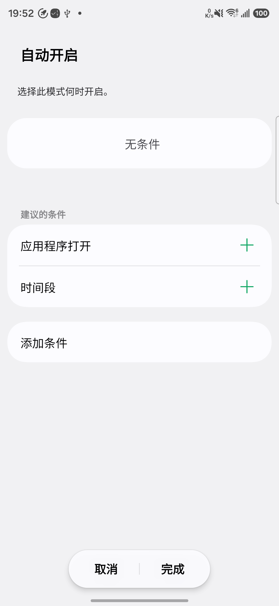
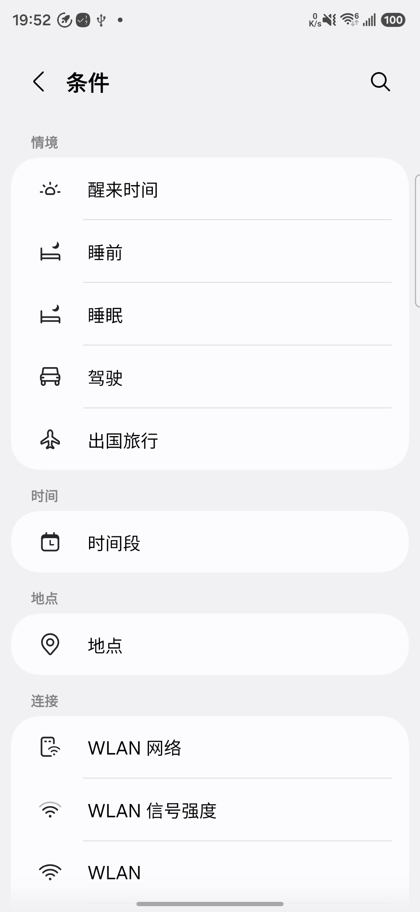
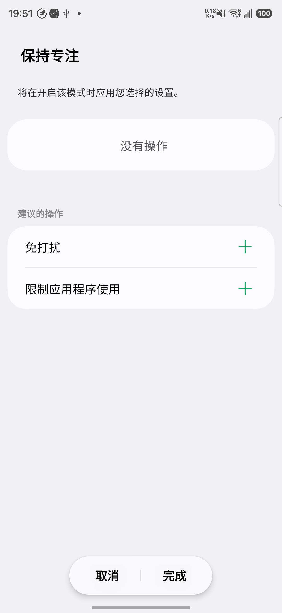
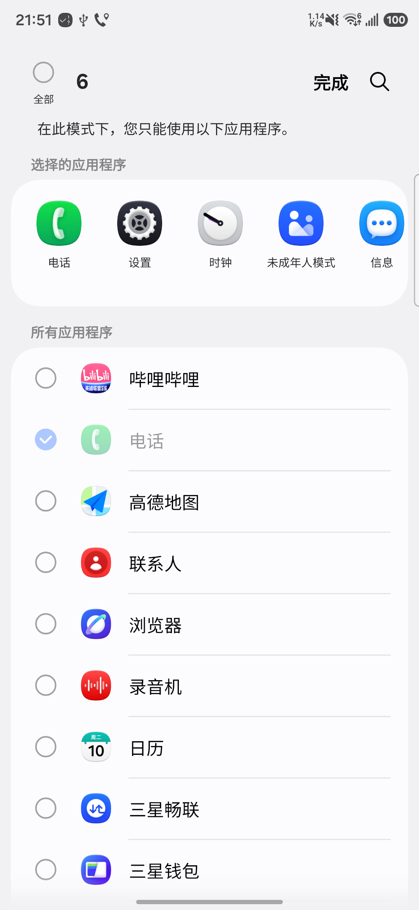
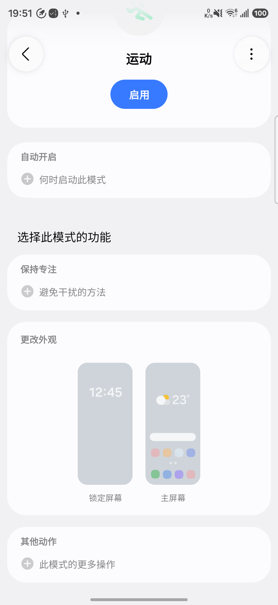
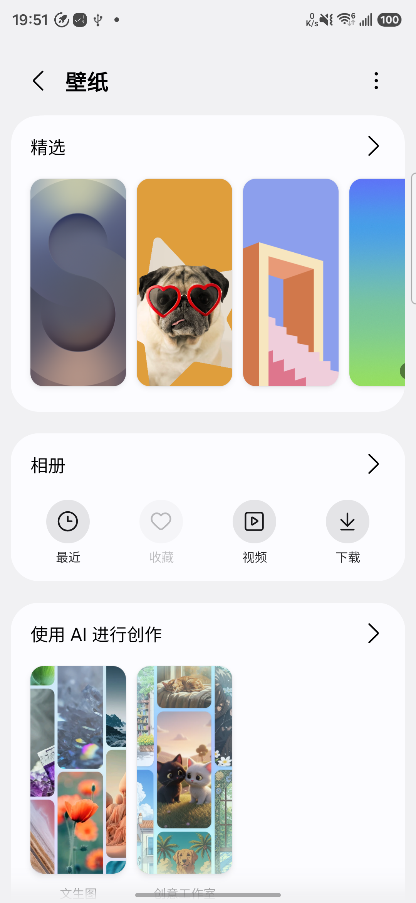
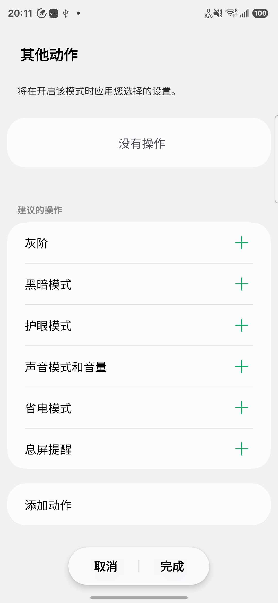
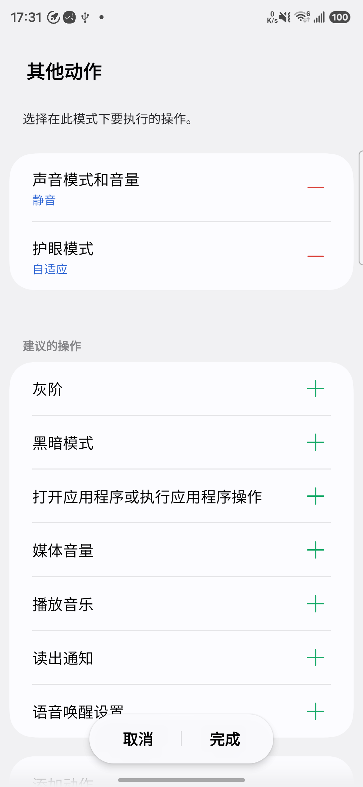
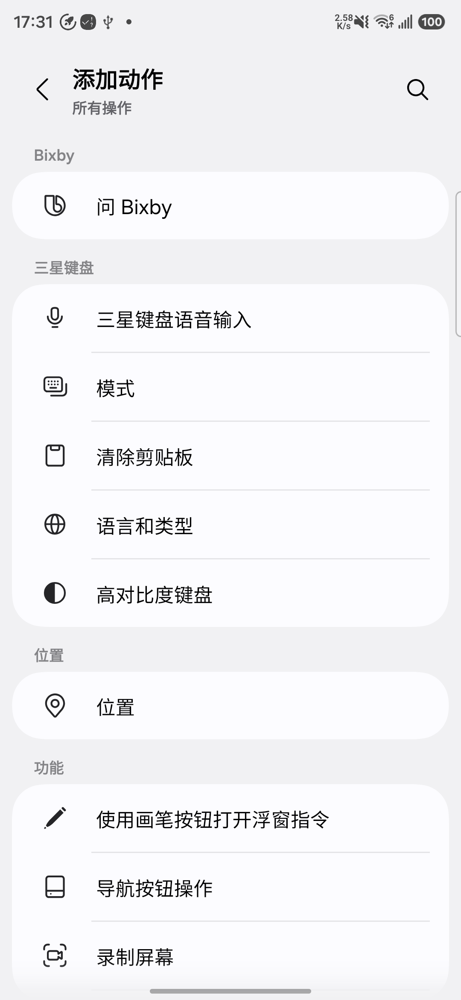

One UI 设计思路
三星把模式做成了一个能改系统设置的自动化容器。
与iOS高度相似，但是支持的系统行为配置更加多样化，但也更佳复杂体验不佳
入口和激活的结构与 iOS 接近，差别集中在配置这一段能走多深。
控制中心磁贴长按，或设置首页
睡眠、影院、驾驶、运动、放松、工作
自定义名称图标，误删可找回
磁贴点一下，详情页也有大按钮
8 类 28 个条件，含情境与设备
手动开启可设时长，到点自己关
免打扰 + 限制应用程序两张名单
锁屏与主屏各换一套，退出还原
23 类 115 项系统设置批量调节
控制中心常驻入口，配置生效的模式可以在这里主动切换状态，但预设仅睡眠模式，上手门槛高
入口只比 iOS 多一步「详细信息」。七个预设按场景排好，点开先问用「基本」还是「自定义」。

磁贴直达
下拉控制中心长按「模式」，点左下角「详细信息」直接进设置；平时点一下就能开关，不用翻菜单。
会议中途、进影院前一步切换
七个预设排开
睡眠、影院、驾驶、运动、放松、工作六个预设加一个自定义，按使用场景排列，没配过的标「未设置」。
第一次用，直接挑一个
新建与恢复
自己起名字、选颜色和图标；删掉的系统预设能在顶部恢复列表里一键找回，不必重配。
预设不合适，自己改一个支持更加丰富的自动激活条件，除了时间地点外支持丰富的事件出发点比如连接的网络/设备等
每个模式的详情页顶部都有「自动开启 / 何时启动此模式」，这是条件入口。iOS 那边叫「智能启用」的那一层，三星做成了可逐条挑选的清单。


推荐条件不是全量条件的子集：睡眠模式的「睡眠时间表」、其余模式的「应用程序打开」，在 28 个条件里都找不到。系统动作也是一样 —— 建议的操作里会出现「灰阶」这类全量 115 项里没有的条目。建议列表是快捷入口，按场景挑好的组合，不按分类穷举。
One UI系统能力配置分为专注，外观和其他操作配置，能实现更场景化和个性化的系统快速配置
iOS 把配置摊成三个页面，三星压成三张卡：先管注意力，再管氛围，最后才动系统设置。
保持专注
两张口的名单：免打扰决定通知怎么拦，限制应用程序决定哪些应用能用。睡眠模式里就设成了「除了哔哩哔哩和其他 26 个」。


更改外观
锁屏和主屏幕各换一套：壁纸、时钟排版、息屏显示。模式退出时自动换回原来的样子，不会改乱桌面。


沉静的壁纸、极简时钟、息屏显示表盘，一并在模式里定好。
换专用壁纸，或者只保留与当前场景相关的几页应用。
系统记下之前的壁纸和排版，模式一关立刻还原，不需要手动改回去。
其他动作
打破设置页之间的边界，把连接、声音、显示、电池、辅助功能等全部收进模式统一控制。开启时批量改，关闭时全部还原 —— 这是两家差距最实在的一段。



